TRIGO Manpower Board · pre-release review · version 2026-10-15g · 16 Oct 2026
Release readiness review
I opened every tab, panel, dialog, menu and sheet in the real app (the test harness with sample data, including long Thai names and a long host name) at 1400px, 1100px and 390px, in English and Thai, and also checked 1024–1536px laptop widths. That is 124 screens, plus every automated test. Below are the 30 things I'd change, ranked by priority. Each one shows today's screen next to the proposed fix.
Unit tests
125 / 125
13 files, all passing
Browser tests
20 / 23 suites
3 fail, all stale tests (item 4)
Console errors
0
across the 124 screens
Native dropdowns left
0
every select uses the in-app picker
Untranslated in Thai
40+
strings, some half-translated (item 3)
P0 Fix before release: broken, hidden or embarrassingP1 Should be in this pack: inconsistent with the new designP2 Polish: fine to follow in the next packS / M / L rough effort
Already fixed since the last review (checked, no action)
Confirm dialogs name the action and destructive ones are red ("Delete mission").
No native dropdowns remain: Org chart "Show to", Capacity range, host merge and sort all use the in-app picker.
Host panel: "Merge into another host" now sits inside the form, above the footer.
Bulk edit: two numbered steps and a real drop zone.
Empty board and empty forecast: composed empty states with the next step.
Phone: confirm dialogs and "Edit today's board?" open as bottom sheets.
Employee right-click menu: one icon column, sentence case, destructive item last.
Mission panel on phone: Shift on its own row, Start and End side by side.
Settings on phone opens on a section list.
No console errors anywhere in the tour.
P0 · Fix before release
01
Module tabs are hidden at common laptop widths
P0Top bar · desktopM
At any window narrower than about 1,340px the tab strip is cut off behind the status pill, with no arrow or fade to show there is more. At 1280px (a very common laptop) Capacity is hidden. At 1100px Manpower, Host and Capacity are all gone, and "Ma…" peeks out under the pill. People will think those modules were removed in this release.
Measured: tabs clip at 1024, 1100, 1180 and 1280px in English and Thai; fine from 1366px. #board-tabs has overflow hidden and the status pill (#mode-pill) holds three phrases.
Below 1440px the pill shows only its main word (Draft, Locked, Forecast…) with the lock icon, as the phone already does. "Not reviewed · Read-only" moves into its tooltip.
Below 1180px the tabs go icon-only with a tooltip, keeping the label on the active tab. The tabs never clip.
Below 1280px the date drops its year ("Fri 16-Oct").
Add a check to stats-tiles.e2e.js that every tab is fully visible at 1024, 1100, 1280 and 1366px.
02
Disabled main buttons turn into blank white boxes on hover or tap
P0Buttons · everywhereS
When a navy button is disabled and the mouse is over it (or it was just tapped on a phone, where the hover state sticks), its background turns white but its label stays white, so the button looks empty. This hits about a dozen buttons: Bulk edit Apply changes, Export Export, Add Mission Add selected, Hide/Unhide Save, Settings Save, Review & merge Apply, Review changes Apply, Copy forecast, and Sign in while it is signing in.
Cause: styles.css:410.btn:disabled:hover { background: var(--panel) } applies to .btn-primary too.
Today (pointer over the disabled Apply button)
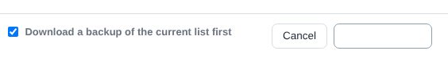
Proposed
disabled, hoveredCancelApply changes
enabled, hoveredCancelApply changes
/* styles.css, after line 410 */
.btn-primary:disabled:hover { background: var(--primary); border-color: var(--primary); }
.btn-danger:disabled:hover { background: var(--danger); border-color: var(--danger); }
03
Thai mode is half-translated, sometimes inside one sentence
P0ไทย · all tabsM
The Thai switch is new in this release, so Thai users will open it straight away. Most labels are translated, but phrase-by-phrase translation leaves sentences that mix the two languages. These read worse than either language alone ("ว่าง 3 on-call staff are เป็นกำลังสำรอง…", "on 4 โฮสต์, run by 2 วิศวกร"). Placeholders, tooltips, two panel tabs, the Export and Bulk edit text and the Settings home subtitles are still English. A scan of the visible text in Thai found 40+ strings.
Today (ไทย)
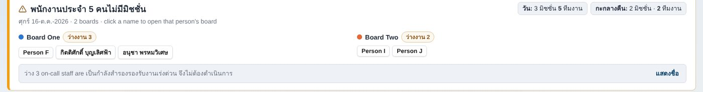
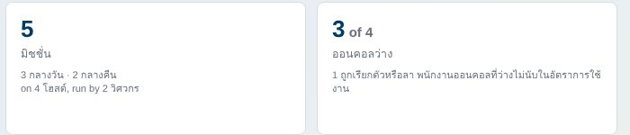
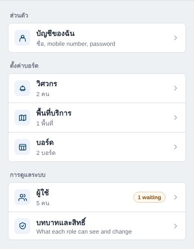
Proposed: translate whole sentences (draft Thai, please have a native speaker check it)
Rule for i18n-th.js: translate a sentence whole, with its numbers as placeholders ("{n} on-call staff are free…"). Translating fragments is what creates the mixed lines.
04
The release gate is red: 3 browser test suites fail, and all three are stale tests
P0TestsS
I checked each failure by hand, and the app behaves correctly in all three. Each test still expects an older layout. Ship with a green suite, so that the next real failure isn't lost among known ones.
Today
Suite
Fails at
Why
app-version
final "no console errors"
The test itself serves a 500 to check the app stays silent; Chrome logs that 500, and the test counts its own log.
forward-planning
Part B, line 767
Clicks #board-tabs .tab-capacity at 390px. On a phone that tab is hidden; Capacity lives under Me.
list-alerts-org
"+ Add start date"
Focus correctly lands on the new in-app date button, but the test looks for the field name inside .pk, where the date picker doesn't keep it.
Proposed
Suite
Fix
app-version
Filter Failed to load resource … 500 out of a.errors for the step that serves it, or check the errors before that step.
forward-planning
Open Capacity the phone way: #btn-bn-more, then the "Capacity" item.
list-alerts-org
Read the name from the focused button's field (aria-label, or the input the date picker is bound to).
Then run all 23 suites once more before tagging the release.
P1 · Should be in this pack
05
Board toolbar wraps to two rows, and the Names toggle looks like a language switch
P1Board toolbarS
The new ไทย | English card-names toggle sits in the toolbar with no label. It reads as the app language (which has the same two words in the avatar menu), so people will flip it expecting the screen to turn Thai. It also pushes Undo, Reset Board and Export onto a second row below 1280px. The phone ⋯ menu already labels it "Names". Do the same on desktop.
Today (1100px)
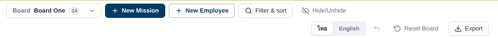
Proposed: Names moves into Filter & sort; the toolbar stays on one row
Board One ▾New MissionNew EmployeeFilter & sortResetExport
Filter & sort
EngineerAll
Sort byMission No.
Names on cards
ไทยEnglishBoth
06
Mission card text breaks with long customer names
P1Board · mission cardS
With a long customer name at laptop width, the meta line wraps inside each part. The time splits as "08:00-" / "17:00" and the engineer as "Eng" / "Two", so the card header doubles in height. Customer names like this are normal for TRIGO's clients.
Today (1100px)
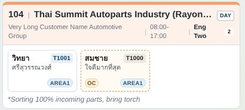
Proposed: time and engineer never wrap; the customer name shortens with …
104Thai Summit Autoparts Industry (Rayong Plant 2) Co., Ltd.DAY
Very Long Customer Name Automotive Group· 08:00–17:00 ·Eng Two
วศวิทยาAREA1สชสมชายOC
Change
white-space: nowrap on the time and engineer spans; min-width: 0; text-overflow: ellipsis on the customer; the full text stays in the tooltip and the panel.
07
Org Chart on a phone doesn't use the phone header the other tabs share
P1Org Chart · phoneM
Overview, Manpower and Host open with the same header: a summary card, Filter and ⋯. Org Chart instead stacks the Board picker, a lone "More" button, a stats line, a lone Export button, the view switch, three filter buttons, a floating "FILTER" label and "Show to". The chart starts below the middle of the screen.
Today (390px)
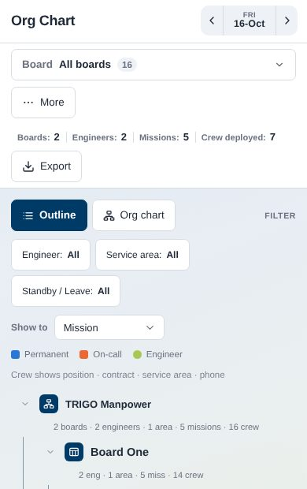
Proposed
Org Chart16-Oct
All boards · 7 crew deployed
OutlineOrg chart
TRIGO Manpower2 boards · 2 engineers · 5 missions · 16 crew▾ Board One▾ Eng One · 2 missions101 Host Alpha · Day · 2 crew
Filter holds Board, Engineer, Service area, Standby / Leave and Show to; ⋯ holds Export.
08
On/off switches are navy on desktop but green on a phone
P1Manpower · Host · phoneS
The Manpower Status switch and the host Active switch are navy on desktop and lime green on a phone. Signal keeps navy as the only action colour. Green is the brand accent, and in the app it also signals "good" (Active, Approved).
Today: desktop (left), phone (right)
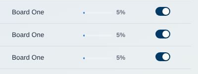
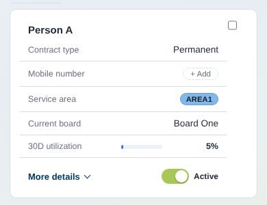
Proposed: navy everywhere
Active desktop + phone
Inactive
09
Phone Filter sheet has no title, Clear or Done
P1Board · phoneS
Tapping Filter drops a panel from the top with four boxes that look like empty text fields (Engineer, Host, Customer, Shift). It has no heading, no way to clear everything and no obvious way to close it. The phone's other sheets (confirm, Edit today's board) open from the bottom with a title and buttons.
Today
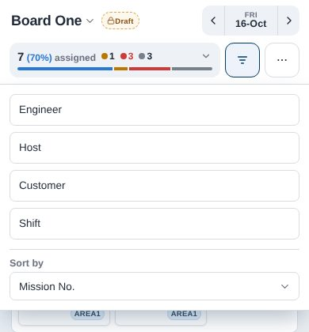
Proposed: a bottom sheet like the others
Filter & sortClear all
EngineerEng One
HostAll
CustomerAll
ShiftAll
Sort byMission No.
Show 3 missions
10
The module tabs can't be reached with the keyboard
P1AccessibilityS
Pressing Tab from the top goes Lock → date → avatar → toolbar and skips Board, Overview, Org Chart, Manpower, Host and Capacity. They are plain <div>s with a click handler, so keyboard and screen-reader users can't switch modules. Employee cards on the board are <div>s too.
// one helper for all six tabs
const ov = document.createElement("button");
ov.type = "button";
ov.className = "board-tab tab-overview";
ov.setAttribute("aria-current", isOverview() ? "page" : "false");
ov.onclick = () => { … };
Reset the button styles in .board-tab (border, background and font: inherit). Give the focus ring white on the navy bar.
11
Utilization shows 58.33% in one place and 58% in another
P1OverviewS
The Overview's top line and the phone summary card print two decimals (58.33%). The KPI card, the By board table and the board header print whole numbers (58%, 70%). Two decimals suggest a precision the data doesn't have.
Today
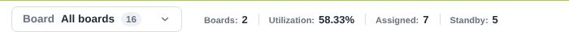
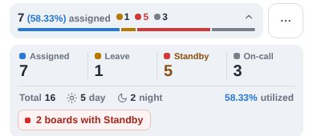
Proposed
Boards: 2Utilization: 58%Assigned: 7Standby: 5
One fmtPct() helper (whole numbers) used by every utilization label.
12
A forecast day shows "Add Mission" next to "New Mission"
P1Board · forecastS
On a future date the toolbar has Add Mission (copy missions from the confirmed plan) right beside New Mission (create one). The labels mean almost the same thing, and the empty state repeats "Add Mission…".
Today
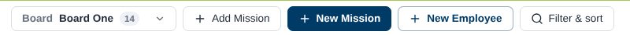
Proposed
Board One ▾New MissionCopy from confirmed…New Employee
13
People tiles and the black night block still use the old look (Signal review 04 and 05)
P1BoardL
This is the biggest remaining gap with the new design. The cards are still grey tiles with "Person" bold over a tiny second line, headers carry a pastel wash, and a night mission gets a near-black body that reads as an error. The earlier review suggested shipping it on its own because it touches drag and drop, print and the JPG export. My recommendation: leave it out of this pack unless you have time to test the exports, and make it the headline of the next one.
Today
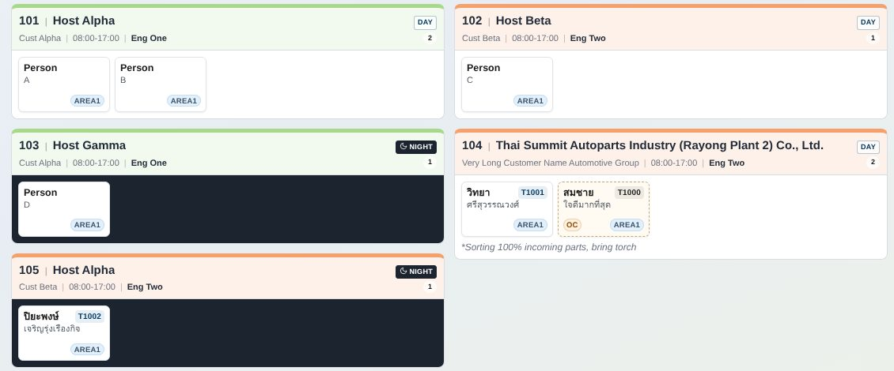
Proposed (as in the Signal review)
101Host AlphaDAY
Cust Alpha· 08:00–17:00 ·Eng One
PAPerson AAREA1PBPerson BAREA1
103Host GammaNIGHT
Cust Alpha· 20:00–05:00 ·Eng One
PDPerson DAREA1PGPerson GOn-call
P2 · Polish
14
Export opens a full-height drawer for one choice
P2Board · ExportS
Signal uses a side panel for one record and a small dialog for one decision. Export is one decision (JPG, PDF or Excel), yet it fills a full-height panel that is 80% empty, and still cuts its one-line description short with "More".
Today
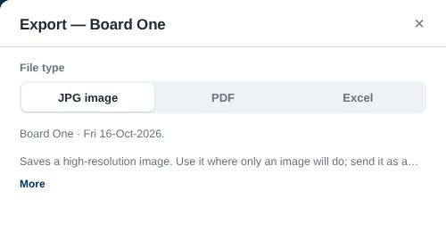
Proposed
Export Board One
Fri 16 Oct 2026
JPG imagePDFExcel
A high-resolution picture of the board, for chat groups. Use PDF to print, or Excel to edit.
CancelExport JPG
15
Help text is cut to one line even when the panel has room
P2PanelsS
Host panel, Bulk edit and Export clamp every hint to one line and add "More". Most hints are under two lines, so people click More just to read half a sentence.
Today
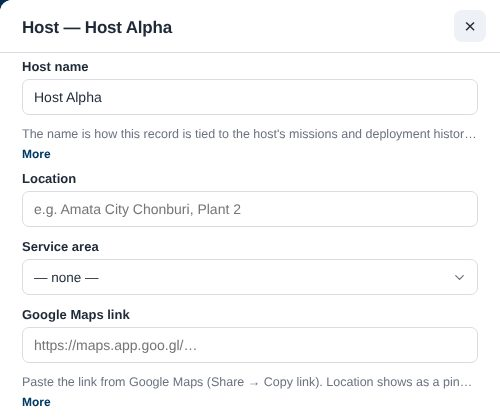
Proposed: clamp at 3 lines, and show More only when the text is actually cut
Host Alpha
The name ties this record to the host's missions and deployment history. Renaming it here renames it everywhere.
https://maps.app.goo.gl/…
Paste the link from Google Maps (Share → Copy link). The location shows as a pin on the mission card.
16
Warnings in the mission panel use a green-style tick
P2Mission panelS
"✓ … — no service area set yet" and "✓ Eng Two — no account yet" combine a tick (all good) with a gap to fix, in bold navy.
The Mission, Export and Employee panels use a plain ×. Host, Bulk edit and the Thai Mission panel use a grey filled square, which makes the same panel look different by language.
Today
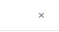
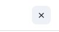
Proposed: one quiet icon button, grey fill on hover only
rest · hover
18
Host panel: fields start flush under the header, and titles repeat themselves
P2Host · Export panelsS
In the Host panel "Host name" sits right on the header's divider (about 6px, against 24px in the Mission panel). Titles read "Host — Host Alpha" and "Export — Board One". Signal's inspector puts the record name in the title and the type underneath.
Today
Proposed
Host AlphaHost · 3 missions · 12 deployment days
Host Alpha
19
Status pill: "Not planned" looks disabled, "Draft" carries three phrases
P2Top barS
"Not planned" is grey text in a grey outline, so it looks like a disabled button. "Draft · Not reviewed · Read-only" is the longest thing in the top bar and is part of why the tabs get pushed out (item 1).
Today
Proposed
Not plannedDraftdetails in the tooltip
20
Dates are written four ways, sometimes on the same screen
P2EverywhereM
The forecast banner says "Fri 6 Nov", and the empty state right below it says "Fri 06-Nov-2026". Capacity uses "16/10", and the Overview chart "01/10". Pick one long and one short form.
Today
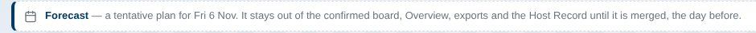
Proposed
Use
Format
Example
Header, banners, panels, empty states
Ddd d Mmm yyyy
Fri 6 Nov 2026
Grids, chart axes, chips
d Mmm
6 Nov
Exports (Excel)
real dates
unchanged
21
Org Chart counts say "5 miss · 14 crew" and "2 eng"
P2Org ChartS
"miss" reads as a word, not an abbreviation. The row has room for the full words, and the top line already spells them out.
Today
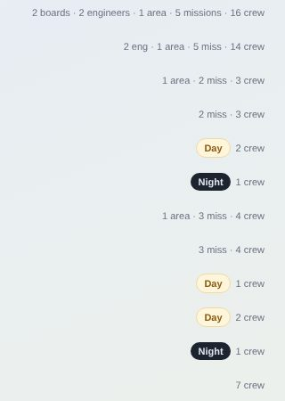
Proposed
2 engineers · 1 area · 5 missions · 14 crew1 area · 2 missions · 3 crew
22
Overview's navy "In detail" and "Period" bands are the heaviest thing on the page
P2OverviewS
Two full-width navy bars carrying a small label pull the eye away from the numbers. Signal builds structure from space and type. Still open from the earlier review (item 17).
Today
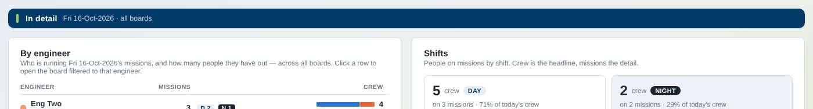
Proposed
In detailFri 16 Oct 2026 · all boards
23
Manpower table: 60+ "+ Add" chips drown the data
P2ManpowerS
Every blank TRIGO ID, Position, Mobile and Start date shows a "+ Add" chip, so on a real list the chips outnumber the names. The amber pills above the table ("10 missing TRIGO ID") already flag the gaps.
Today
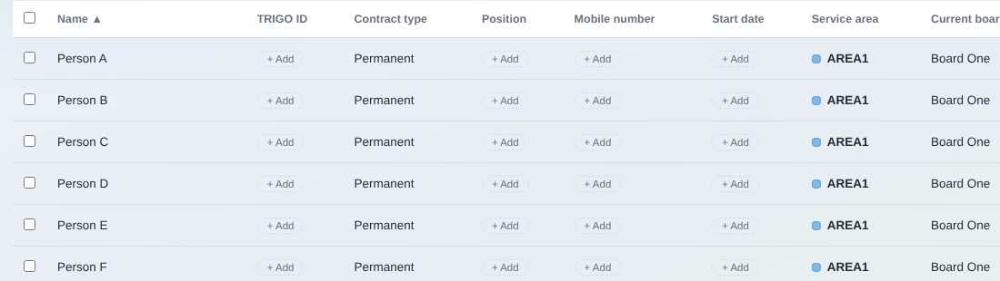
Proposed: a quiet dash, and "+ Add" on the row you point at (phone cards keep it)
Person A
—
Permanent
—
—
Person B
+ Add
Permanent
+ Add
+ Add
วิทยา ศรีสุวรรณวงศ์
T1001
Permanent
—
—
24
Capacity on a phone: "No demand yet" sits on the card edge
P2Capacity · phoneS
The empty line has no inner padding, so it touches the card's left edge while the controls below are indented.
Today
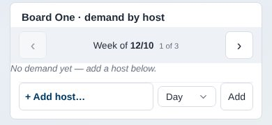
Proposed
Board One · demand by host
No demand yet. Add a host below.
+ Add host…
Day ▾Add
25
Phone leave tabs are cut off with no hint that they scroll
P2Board · phoneS
"Unpaid" is cut at the screen edge and "Exchange" is out of sight. A fade on the right edge tells people the row scrolls.
Today
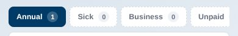
Proposed
Annual 1Sick 0Business 0Unpaid 0
26
Thai shift names don't match: กลางวัน and กะกลางคืน
P2ไทยS
Day became "กลางวัน" in the last update, but Night is still "กะกลางคืน". The longer word also crowds the Shift switch and the card tag.
Today
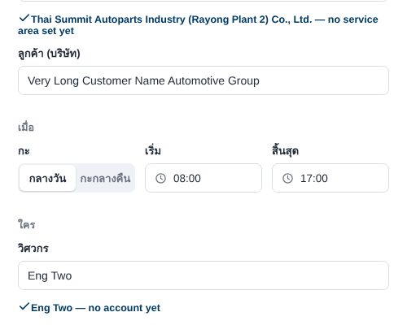
Proposed
กลางวันกลางคืน
27
Users list shows the same name twice
P2Settings · UsersS
When the display name equals the short name, the row shows "admin.z" and then an "admin.z" tag. Show the tag only when the two differ.
Today
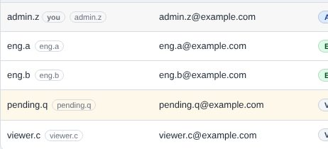
Proposed
admin.zyouSomchai J.somchai.j
28
A night mission can show day hours
P2Board · missionS
Missions 103 and 105 are Night, but their cards say 08:00–17:00 because no times were entered and the default is the day shift. Switching Shift to Night should also switch empty or default times to the night default, or the card should say "Night · time not set".
Today
Proposed
105Host AlphaNIGHT
Cust Beta· 20:00–05:00 ·Eng Two
Please confirm the night default hours your team uses.
29
Dark-theme CSS is still shipped though the app is light-only
P2CodeS
The theme toggle was removed and a stored dark theme is cleared, but styles.css still carries about 30 [data-theme="dark"] rules and a second token block. Users never see it; removing it makes the CSS smaller and stops future edits from maintaining two palettes.
Change
Delete the :root[data-theme="dark"] blocks and the dark-only rules; keep the comments that explain the export colours.
30
Add a Thai check to the language test so item 3 can't come back
P2TestsS
After switching to ไทย, walk each tab and the main panels and fail on visible text, placeholders or tooltips that are still English. The check should ignore names, IDs, AREA codes and file types (Excel, PDF, JPG). The scan I used for this review is about 30 lines and can go into tests/e2e/language.e2e.js.